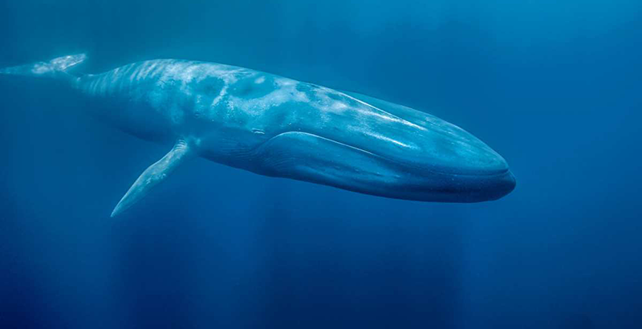

EFECTOS EN LOS ANIMALES MARINOS
PELIGROS QUE TIENEN LOS ANIMALES MARINOS
Los peligros que tienen los animales marinos cada dia son mayore, estos peligros son:
- El peligro de extinción.
- La contaminación del mar.
Esto ocasiona grandes efectos en los animales, por ejemplo uno de los animales marinos que más lo sufren son:
Las ballenas
Las ballenas, aparte de ser uno de los animales marinos que más sufren la cacería indiscriminada, sobre todo en países asiáticos como Japón, también spn de los animales más afectados por la contaminación del mar, esto se debe a la contaminación sónica que les hace sufrir daños en su audición, e inclusive, otras formas de daño físico y psicológico, producido por actividades como la exploración petrolífera y de gas, la construcción de plataformas petroleras,etc.., a continuación se muestra un ejemplo donde se puede reflejar en el grito de la ballena este daño mencionado.